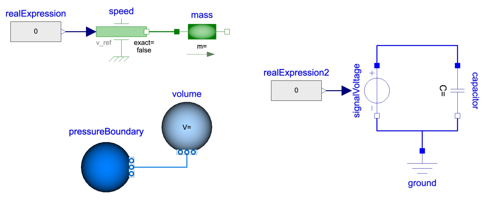

Understand your model: let’s integrate!

I hope you’ve got your preferred drink in hand ☕️🫖💧
📬 📰 Saturday editions - for having more time to read during the weekend! Let’s experiment for a few weeks. Let me know if this is not a convenient day (❓).
If you have followed the newsletter, you know that Modelica is acausal, that it can be powerful also for large systems, and that once the symbolic manipulation is performed, the solver will compute the values of the states based on their derivatives.
One thing that I did not mention so far, on purpose, is why we don’t compute the derivatives based on the states - indeed, we compute the states based on the derivatives. Let’s talk about that and see what it means in practice.
Theoretically
Remember the equation we had last time:
y_dot = f(y,u,t)We could potentially turn it around.
y = f_2(y_dot,u,t)And take the example of a model of mass that implements the second Newton’s Law:
F_I = m * a = m * v_dotwhere:
F_I[N] is the inertial forces (the sum of forces applied on the mass),m[kg] is the mass of the mass (yeah, I know),a[m/s^2] is the acceleration of the mass,v[m/s] is the velocity of the mass, andv_dot[m/s^2] is the derivative of the velocity of the mass - hence equal to the accelerationa.
Imagine we apply a sinusoidal velocity (v) on the mass, we could compute the inertial force (F_I) easily by first differentiating the sinus to get the acceleration (a) and then multiply it by m.
In theory, yes! And it is actually easier to derivate than integrate analytically…
It’s easier to derivate analytically
I can’t tell how were your mathematics courses. Mine were great! And shout out 📢 to all my maths professors 🧑🏫 by the way, they were always very passionate people, making most part of it super interesting. Thanks!
Well, I diverge…
One thing I clearly remember from my courses is how easy we could derivate function, over and over again, analytically. And how challenging it could be to integrate functions!
And you see it even now on computers, automatic differentiation is possible in many language / software, while integration is always numerical.
So back to our mass example:
F_I = m * v_dot = m * d(sin(w * t))/dt = m * w * cos(w * t)Easy! No need for “integration by parts”. And it might not be that easy all the time… keep this ⚠️ warning in mind.
It’s easier to integrate numerically
Numerically however, it is much simpler to integrate.
The integral is the area below the curve, right? Then we can just decompose the curve into small rectangles - from the x-axis to the curve -, and make the width of the rectangles as small as needed to approximate our integral. Farouk did a great animation for this. I posted it here and I recommend you check it: short and nicely done 😊
So, if it was what we needed to do, we could do it. Now we’ll see in another article what a solver does.
Derivatives can introduce noise
Do you still have the above ⚠️ warning in mind?
Analytical derivatives are all fine as long as everything is smooth and continuous. Unfortunately, a computer is anything but continuous. It is digital and by nature discrete. Discrete in the time steps it takes (on the x-axis) and discrete in the values it is able to take (on the y-axis) to represent variables.
And the latter is one of the reasons why we cannot compare a Real variable with an Integer. I explained it here. The value of the Integer might not even “exist” in the Real scale.
To avoid diverging too much, and still making the point: imagine you have a variable that shall represent values between 0 and 4 and can only take 4 values, you’ll most likely end up with {0, 1.33, 2.66 , 4}. Neither 1, 2 nor 3 “exist” in the set of this Real variable. Now the same can happen even if you have much more points than 4 to represent your number.

This “discretization on the y-axis” is called “quantization”. And it also means that in between the values the variables can take, there are small steps. A trajectory is never perfectly smooth. So the derivative is no more trivial!
Let’s have a look on the effect of the quantization on the derivative:

This is quite interesting! We took the value of w to be 1 so that the integral of the sinus multiplied by -1 is cos(t) = der(sin(t)). We plot on the same graph, the analytical solution, the result of the integral (with the -1 gain) and the derivative.
The integral and analytical solution are perfectly overlapping. The derivative however is extremely noisy!
To be fair, we took a pretty bad quantization while our computers are much better now, but it illustrates the point very well. And with a higher quantization, the effect is less, but we get much more complex model in general and they will clearly suffer from this “cumulatively”.
Tip and trick: if you can define the
min,maxandnominalvalues of your variables, this will help the tool defining the range the variable can take and thus better define how to “split its range”. The nominal value will help in case of need for normalization - we won’t cover that anytime soon.
Integration is more physical
This one can cause me some troubles… and I take the risk… at least, silently between us:
📢 INTEGRATION IS MORE PHYSICAL!!
Oups, that was a bit louder than desired. (Or not?)
Let me explain: imagine you specify the speed of the mass to be a step. That means that its acceleration will be infinite (well a Dirac) at the moment of the step, and 0 before and after. Does that sound physical to you? And note that the speed is the derivative of the position so a ramp on the position would have the same effect. And there are many cases like that that make the derivative “go crazy”, while the integral will tend to “smooth things up”.
What it means in practice
I hear you: “Enough about the theory, what does this mean in practice?”
Well… I don’t know! 🤷♂️ Just kiddin’ 😉
It means that while acausality is great for many things, it does not mean we should not think about what we model, how we model it and understand the consequences. And especially when it comes to sources!
The tool you use might be able to manipulate the equations in order to integrate where it apparently would have derivated. Yet it will hardly solve the case of the velocity source connected to a mass.

You can check the model from last week - the quarter of a vehicle: it has a force source applied to the mass and the position source is applied on the spring-damper, not on the mass. This was clearly physical, and yet carefully reflected. One could have said that the wheel has its own mass that is not suspended, so between the position source and the damper. Yes! But the mass is really small compared to the quarter of the vehicle and would have caused us many numerical issues… and I would have added that the tyre itself introduces an additional stiffness and damping effect, so I would have placed it between the wheel’s mass and the ground. 😉
The END for today
Enough for today. I hope this clarifies a point and that you’ll have that in mind for your next models. Maybe you had some issues with previous models - independently from the language or software -, and this could be the cause?
In any case, I hope this was useful.
Break is over, go back to what you were doing.
Clem
Next ->
© 2025 Clément Coïc — Licensed under creative commons 4.0. Non-commercial use only.